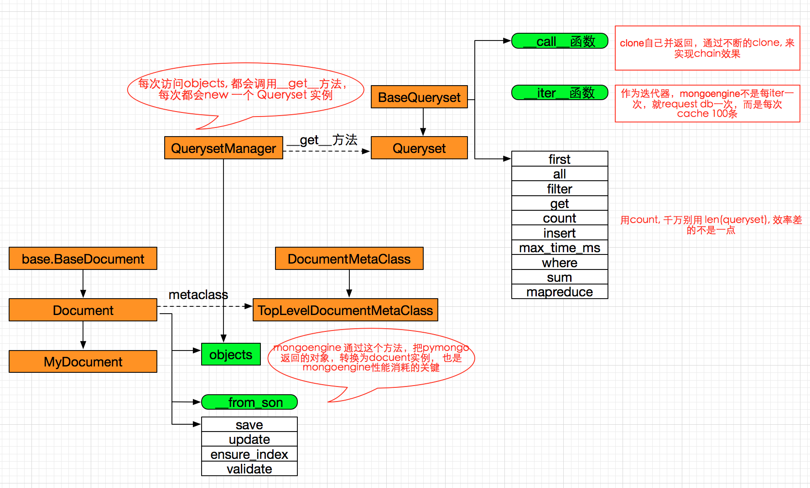

mongoengine¶
mongoengine 是纯python框架，实现了mongo的ORM, 整体结构如下
为什么要使用 metaclass:
自定义文档(MyDocument) 继承自Document, Document 很多函数都需要知道当前文档有哪些field,
所以需要metaclass, 在创建MyDocument类的时候， 把所有自定义field 存放在 cls._fields 中，
父类Document 中的方法访问cls._fields 就可以知道自定义了哪些field
配置从读主写¶
example:
from mongoengine import connect
from pymongo import ReadPreference
connect('mydb', host='mongodb://server1:27017,server2:27017,server3:27017',
replicaSet='replset',
read_preference=ReadPreference.SECONDARY_PREFERRED)
问题¶
mongoengine 可以理解为对pymongo的封装，跟pymongo比，它最大的消耗在 从pymongo查询的结果，转换为Document实例,
这确实很费资源
mongoengine 在文档实例save的时候，会调用validate来验证每一个field, 这步没有必要，比较耗时
在使用queryset类时，同时用 as_pymongo() 和 only() 函数，对dict类的解析有问题， 不能解析到dict内部(二级hash),
这是mongoengine 的问题 https://github.com/MongoEngine/mongoengine/issues/563, 还未修复